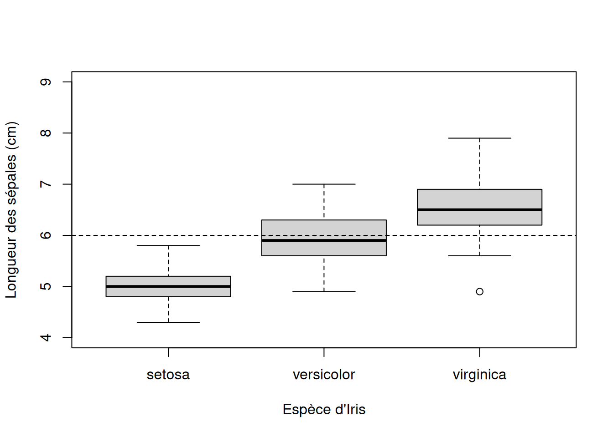
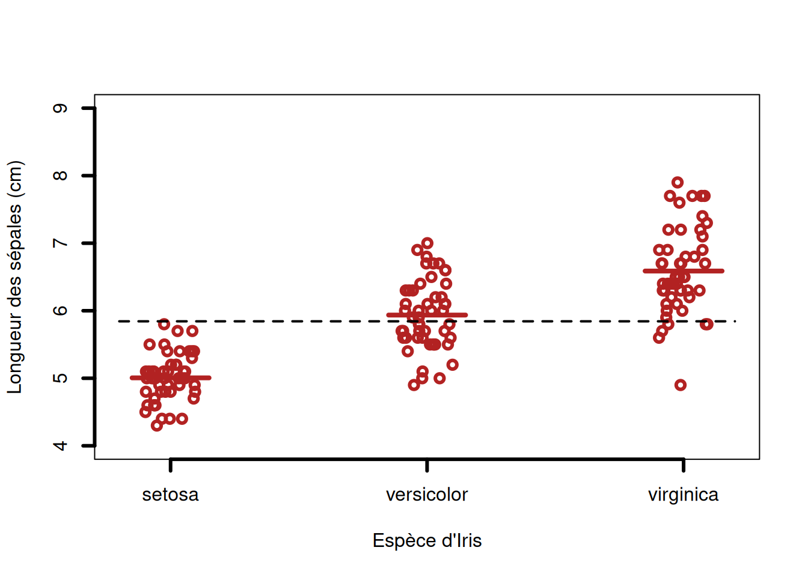

Veuillez noter qu’il est possible d’avoir plus d’une bonne réponse par question. Vous pouvez reprendre chaque exercice grâce aux boutons “Start Over” ou “Try Again” Le bouton “hint”” est là pour être utilisé!
Matériel accompagnateur
Voici un ensemble de commandes organisées en script (voir capsule #5).
Charger les données pour l’analyse.
Il s’agit d’un jeu de données fourni avec R donnant les mesures de longueur et de largeur des composantes des fleurs de 3 espèces d’iris et qui a été utilisé par Ronald Fisher dans une de ses analyses célèbres. On va d’abord charger le jeu de données dans la mémoire de R et vérifier les propriétés de ces données avec les fonctions suivantes :
Astuce
Tappez iris dans l’aide de R pour en savoir plus (voir capsule #1).
Code
data("iris")summary(iris)
Sepal.Length Sepal.Width Petal.Length Petal.Width
Min. :4.300 Min. :2.000 Min. :1.000 Min. :0.100
1st Qu.:5.100 1st Qu.:2.800 1st Qu.:1.600 1st Qu.:0.300
Median :5.800 Median :3.000 Median :4.350 Median :1.300
Mean :5.843 Mean :3.057 Mean :3.758 Mean :1.199
3rd Qu.:6.400 3rd Qu.:3.300 3rd Qu.:5.100 3rd Qu.:1.800
Max. :7.900 Max. :4.400 Max. :6.900 Max. :2.500
Species
setosa :50
versicolor:50
virginica :50
Comparer la moyenne des valeurs de longueur de sépales
Pour cet exercice, on veut comparer la moyenne des valeurs de longueur de sépales de l’Iris versicolor et une valeur seuil (arbitraire) de 6 cm. Pour les besoins de l’exercice, nous allons comparer une moyenne à une valeur seuil qui est ici arbitraire. Mais cette situation est courante lorsque vous cherchez à comparer la moyenne d’un échantillon à une norme, par exemple. Il est facile de comprendre une situation ou vous chercher à vérifier que la concentration d’un certain contaminant dans un échantillon d’eau de baignade doit être en moyenne significativement différente (inférieure) qu’un seuil légal.
Note
Cette espèce est le symbole floral du Québec !
Ajouter une représentation graphique de cette valeur seuil (voir Capsule #7)
Code
boxplot( Sepal.Length ~ Species,ylim =c(4, 9),xlab ="Espèce d'Iris",ylab ="Longueur des sépales (cm)", data = iris)abline(h =6, lty =2)

Définir des indices pour sélectionner les données appropriées
Code
versi <- iris$Species =="versicolor"
Faire le test de comparaison de moyenne
On fait un test bilatéral qui convient à la grande majorité des situations. Un test bilatéral ne présuppose pas que la moyenne devrait être significativement supérieure ou inférieure à la valeur seuil, mais plutôt qu’elle pourrait être l’un ou l’autre, sans préférence.
Code
t.test(iris$Sepal.Length[versi], mu =6)
One Sample t-test
data: iris$Sepal.Length[versi]
t = -0.87674, df = 49, p-value = 0.3849
alternative hypothesis: true mean is not equal to 6
95 percent confidence interval:
5.789306 6.082694
sample estimates:
mean of x
5.936
Pour poursuivre l’exemple, on peut faire le même test de façon unilatérale. Ici on cherche à démontrer si la moyenne est significativement inférieure à la valeur seuil de 6 cm.
Code
t.test(iris$Sepal.Length[versi], mu =6, alternative ="less")
One Sample t-test
data: iris$Sepal.Length[versi]
t = -0.87674, df = 49, p-value = 0.1925
alternative hypothesis: true mean is less than 6
95 percent confidence interval:
-Inf 6.058384
sample estimates:
mean of x
5.936
On voit que la valeur de la p-value est différente, ainsi que l’intervalle de confiance à partir duquel celle-ci a été calculée. En effet, faire un test unilatéral changera les calculs statistiques, mais on constate également que la conclusion du test reste la même !
Comparer maintenant les moyennes des valeurs de longueurs de sépales de l’Iris versicolor et l’espèce subarctique Iris setosa
Le but de ce test devient ici de vérifier si ces deux espèces cousines produisent des sépales de longueurs différentes en moyenne.
Définir des indices pour sélectionner les données appropriées
Code
setos <- iris$Species =="setosa"
Faire le test de comparaison de moyenne
Il y a des arguments (options) à la fonction t.test() dont nous pouvons préciser la valeur (voir capsule #3). Nous allons faire un test pour échantillons non appariés (situation par defaut dans R).
Welch Two Sample t-test
data: iris$Sepal.Length[versi] and iris$Sepal.Length[setos]
t = 10.521, df = 86.538, p-value < 2.2e-16
alternative hypothesis: true difference in means is not equal to 0
95 percent confidence interval:
0.7542926 1.1057074
sample estimates:
mean of x mean of y
5.936 5.006
La conclusion de ce test est claire : ces deux espèces produisent des sépales dont les longueurs sont en moyenne significativement différentes, 19 fois sur 20 (confiance à 95%). Le résultat du test nous rappelle par ailleurs les moyennes de chaque échantillon à la fin du texte (5.936 pour I. versicolor et 5.006 pour I. setosa).
Comparer les moyennes
On veut maintenant comparer les moyennes des valeurs de longueurs de sépales des trois espèces en même temps. Nous devons utiliser une autre méthode, l’ANOVA pour cela. En effet, lorsqu’on veut comparer plus de deux échantillons, il est erroné de répéter des tests de t deux à deux sur toutes les paires possibles. La raison est simplement mathématique et elle concerne directement le risque (probabilité) de se tromper en détectant une différence significative, ou erreur de type I : Lorsque nous faisons une seule comparaison de 2 moyennes (t-test), nous fixons le risque d’erreur de type I avec le paramètre alpha, souvent choisi à 0.05 (5%). Donc, selon les règles de calcul des probabilités, la probabilité de ne pas faussement détecter une différence significative est 1 - 0.05 = 0.95.
Maintenant, si nous faisons une autre comparaison d’un couple de moyennes (si nous comparons 3 échantillons, nous avons 3 comparaisons de couples de moyennes à faire), toujours selon les règles de calcul des probabilités, notre probabilité de ne pas faussement détecter une différence significative devient 0.95 x 0.95 = 0.952 = 0.9025. Et si nous complétons nos 3 comparaisons de couples de moyennes, elle tombe à P(3) = 0.953 = 0.857. Autrement dit, même dans ce cas le plus simple possible, faire des t-test à répétition augmente rapidement notre risque de nous tromper (erreur de type I) à 14.7%, bien au-delà du seuil alpha de 5% que nous nous étions fixé au départ !
Une première stratégie pour éviter ce problème est de corrigera priori le seuil alpha de chaque comparaison deux à deux pour diminuer le risque individuel de se tromper en rejetant l’hypothèse nulle et ramener le risque global vers 0.05 (le seuil de départ). Plusieurs méthodes existent, la plus simple et la plus connue étant la correction de Bonferroni qui se résume ainsi : Si on fait n comparaisons deux à deux, alors le seuil de rejet individuel (pour chaque comparaison) devient alpha / n.
Toutefois, une façon plus efficace de vérifier en un seul calcul si tous les échétantillons ont la même moyenne estimée à un seuil de confiance de 95% est l’analyse de variance !
Important
L’analyse de variance (ANOVA) est bien une méthode pour comparer des moyennes !
L’ANOVA se sert en effet de la dispersion des valeurs de plusieurs groupes pour en déduire si, statistiquement, elles ont tendance à être distinctes les unes des autres. Rappelez-vous que la moyenne est une valeur de tendance centrale, alors que la variance est une mesure de dispersion.
On peut illustrer facilement ce principe avec les mêmes données de longueur de sépales que ci-dessus, mais présentées différemment :
Code
# La fonction stripchart() est une forme de plot qui représente les données "brutes" par des points# Combinée à l'option "jitter" qui ajoute un léger déplacement aléatoire, elle permet de bien comprendre les distributions.stripchart( iris$Sepal.Length ~ iris$Species,xlab ="Espèce d'Iris",ylab ="Longueur des sépales (cm)",method ="jitter",jitter =0.1,vertical = T,pch =1,lwd =3,ylim =c(4, 9),col ="firebrick")# Ajouter la moyenne généralelines(c(0.8, 3.2), c(mean(iris$Sepal.Length), mean(iris$Sepal.Length)), lwd =2, lty =2)# Ajouter les moyennes des groupessegments(0.85, mean(iris$Sepal.Length[iris$Species =="setosa"]), 1.15, lwd =4, col ="firebrick")segments(1.85, mean(iris$Sepal.Length[iris$Species =="versicolor"]), 2.15, lwd =4, col ="firebrick")segments(2.85, mean(iris$Sepal.Length[iris$Species =="virginica"]), 3.15, lwd =4, col ="firebrick")

Le principe qui est illustré ici est que l’analyse de variance permet de calculer l’importance relative de la variance intragroupe (entre les valeurs de chaque échantillon; aussi appelée résiduelle) et la variance intergroupe (entre les moyennes des groupes; aussi appelée factorielle).
On le calcule avec le ratio F des variances factorielle sur résiduelle. On peut imaginer à partir du graphique que si les moyennes des groupes sont trop rapprochées alors que les valeurs sont fortement dispersées au sein des échantillons, ce ratio F sera faible et on ne pourra pas conclure qu’au moins une des moyennes des échantillons se détache des autres. Ce n’est pas le cas ici, où il semble bien que les valeurs du premier échantillon se distinguent des valeurs du dernier. Nous allons le confirmer avec le test statistique !
Définir le modèle (linéaire) de l’ANOVA
Code
model <- Sepal.Length ~ Species
Faire le test de comparaison de moyennes multiple = ANOVA
Code
analyse <-aov(model, data = iris)summary(analyse)
Df Sum Sq Mean Sq F value Pr(>F)
Species 2 63.21 31.606 119.3 <2e-16 ***
Residuals 147 38.96 0.265
---
Signif. codes: 0 '***' 0.001 '**' 0.01 '*' 0.05 '.' 0.1 ' ' 1
La conclusion de ce test est claire : la très faible p-value indique que les valeurs de longueurs des sépales d’au moins un des échantillons sont différentes des autres en moyenne, 19 fois sur 20 (confiance à 95%). Pour savoir précisément comment les groupes (échantillons) se distinguent les uns des autres, il faut faire un test supplémentaire à partir des résultats de l’ANOVA.
Poursuivre avec un test post-hoc de Tukey pour vérifier comment les groupes se distinguent
Un test post-hoc permet de distinguer les groupes sans inflation du risque d’erreur de type I (voir ci-dessus), c’est-à-dire en conservant une valeur seuil de rejet globale alpha = 0.05.
Faire le test sur les RÉSULTATS DE L’ANOVA
Code
TukeyHSD(analyse)
Tukey multiple comparisons of means
95% family-wise confidence level
Fit: aov(formula = model, data = iris)
$Species
diff lwr upr p adj
versicolor-setosa 0.930 0.6862273 1.1737727 0
virginica-setosa 1.582 1.3382273 1.8257727 0
virginica-versicolor 0.652 0.4082273 0.8957727 0
Ici la situation est la plus simple possible : avec trois échantillons, il y a trois comparaisons deux à deux possibles. Elles sont toutes présentées dans les résultats du test, avec une p-value associée (colonne p adj). Le test post hoc de Tukley démontre que la moyenne de chaque groupe se distingue significativement de celle de ses voisins.
Visualiser les résultats du test post-hoc sur le graphique
Nous refaisons simplement ici un boxplot sur lequel nous indiquons les différents “groupes de moyennes” similaires, tel que le test post hoc de Tukey l’a démontré, par des lettres. Une même lettre indique des échantillons dont les moyennes ne sont pas significativement différentes. Ici, les moyennes de chaque échantillon sont significativement distinctes les unes des autres, donc chacun est surmonté de sa propre lettre !
Le matériel pédagogique utilisé dans cette capsule est disponible pour le téléchargement sous deux formats différents:
Format PDF standard que vous pouvez consulter et commenter avec Adobe Reader par exemple.
Format HTML dynamique qui se comporte comme une page web et doit être lu avec votre navigateur préféré (Chrome, Firefox, Edge, Safari, etc.).
Pour télécharger le fichier localement sur votre ordinateur, tablette ou téléphone portable, il suffit de cliquer sur le lien désiré avec le bouton droit de votre souris et choisir “sauvegarder sous…”.
---title: Capsule 8---{{< include ../_extensions/r-wasm/live/_knitr.qmd >}}```{r}#| label: setup#| echo: falselibrary(checkdown)```## Objectifs de la capsuleÀ la fin de cette capsule, vous serez en mesure de:1. Un test de Student (*t-test*) pour comparer une moyenne à une valeur seuil, 2. Un test de Student (*t-test*) pour comparer les moyennes de deux groupes non appariés,3. Une analyse de variance (ANOVA) à un facteur pour comparer les moyennes de plusieurs (> 2) échantillons,4. Un test post-hoc pour identifier comment les échantillons se distinguent entre eux.## Capsule vidéo{{< video https://youtu.be/0OIJzasPqYg >}}[Télécharger le script R de la vidéo](www/capsule_8.R) (Faire boutton droit -> enregistrer sous...)## Exercices::: {.callout-note}Veuillez noter qu’il est possible d’avoir plus d’une bonne réponse par question. Vous pouvez reprendre chaque exercice grâce aux boutons "Start Over" ou "Try Again" Le bouton "hint"" est là pour être utilisé!:::::: {.callout-note appearance="simple" icon=false .question}```{r}#| label: question1#| echo: false#| results: "asis"check_question(c("Le test ne présuppose pas qu’une moyenne devrait être significativement supérieure ou inférieure à la valeur seuil.", "Le test ne présuppose pas que la différence entre deux moyennes devrait être significativement supérieure ou inférieure à zéro."),options =c("Le test ne présuppose pas qu’une moyenne devrait être significativement supérieure ou inférieure à la valeur seuil.", "Le test ne présuppose pas que la différence entre deux moyennes devrait être significativement supérieure ou inférieure à zéro.", "Le test présuppose qu’on doit comparer les moyennes de deux échantillons."),type ="checkbox",button_label ="Vérifier",right ="✅ Correct ! Un test est bilatéral justement lorsqu'il couvre toutes les possibilités autres que l'hypothèse nulle qui est *il n'y a pas de différence / pas d'effet autre que celui du hasard*.",wrong ="❌ Incorrect. Le terme *bilatéral* n'a rien à voir avec le nombre d'échantillons impliqué dans l'analyse; il concerne plutôt la formulation de l'Hypothèse alternative du test.",title ="On dit qu’un test de comparaison de moyenne(s) est bilatéral lorsque (plusieurs bonnes réponses possibles) :")```:::::: {.callout-note appearance="simple" icon=false .question}```{r}#| label: question2#| echo: false#| results: "asis"check_question(c("L’hypothèse nulle H0 met en équation le fait qu’il n’y a pas de différence entre les variables comparées ou qu’il n’y a pas d’effet du facteur étudié.", "Une hypothèse alternative H1 qui est le contraire de l’hypothèse nulle H0 (couvre toutes les autres possibilités) implique un test bilatéral.", "Une hypothèse alternative H1 qui ne couvre qu’une moitié des autres possibilités complémentaires à l’hypothèse nulle H0 implique un test unilatéral."),options =c("L’hypothèse nulle H0 met en équation le fait qu’il n’y a pas de différence entre les variables comparées ou qu’il n’y a pas d’effet du facteur étudié.", "Une hypothèse alternative H1 qui est le contraire de l’hypothèse nulle H0 (couvre toutes les autres possibilités) implique un test bilatéral.", "Une hypothèse alternative H1 qui ne couvre qu’une moitié des autres possibilités complémentaires à l’hypothèse nulle H0 implique un test unilatéral."),type ="checkbox",button_label ="Vérifier",right ="✅ Correct ! L'hypothèse nulle de n'importe quel test statistique peut toujours se formuler ainsi : *il n'y a pas de différence / pas d'effet autre que celui du hasard*. Une hypothèse alternative H1 qui est le contraire de l’hypothèse nulle H0 (couvre toutes les autres possibilités) implique un test bilatéral.",wrong ="❌ Incorrect. Atention, il peut y avoir plusieurs réponses valides!",title ="Choisissez TOUTES les affirmations VRAIES à propos des hypothèses statistiques :")```:::::: {.callout-note appearance="simple" icon=false .question}```{r}#| label: question3#| echo: false#| results: "asis"check_question(c("Rejeter une hypothèse nulle H0 à tort, c’est à dire à déclarer qu’une différence ou un effet est significatif alors que ce n’est pas le cas en réalité.", "Risque d’obtenir par hasard un résultat qui ressemble à une différence ou un effet réel, alors que ce n’est pas le cas en réalité."),options =c("Accepter une hypothèse nulle H0 à tort, c’est à dire à déclarer qu’une différence ou un effet est seulement dû au hasard alors que ce n’est pas le cas en réalité.", "Rejeter une hypothèse nulle H0 à tort, c’est à dire à déclarer qu’une différence ou un effet est significatif alors que ce n’est pas le cas en réalité.", "Accepter l’hypothèse alternative H1 qu’il y a une différence ou un effet qui ne résulte pas que du hasard, alors que ce n’est pas le cas en réalité.", "Risque d’obtenir par hasard un résultat qui ressemble à une différence ou un effet réel, alors que ce n’est pas le cas en réalité."),type ="checkbox",button_label ="Vérifier",right ="✅ Correct ! ",wrong ="❌ Incorrect. Attention: lorsqu'on fait un test statistique, on n'accepte jamais une hypothèse ! On la rejète, ou bien on échoue à la rejeter. De plus, on teste seulement l'hypothèse nulle. Il y a ici deux façons de formuler la même idée : l'erreur de type I consiste à détecter PAR HASARD un effet qui n'est pas réel." ,title ="Lors d’un test statistique, l’erreur de Type I correspond à (plusieurs bonnes réponses possibles) :")```:::::: {.callout-note appearance="simple" icon=false .question}```{r}#| label: question4#| echo: false#| results: "asis"check_question(c("Vrai"),options =c("Vrai", "Faux"),type ="checkbox",button_label ="Vérifier",right ="✅ Correct ! Il faut fixer notre tolérance à ce risque AVANT de faire le test. On choisi souvent un seuil alpha = 0.05, mais la seule obligation est de le fixer a priori.",wrong ="❌ Incorrect. On peut *contrôler* l'erreur de Type I en fixant notre tolérance à ce risque avant de faire le test." ,title ="Dans un test statistique, nous pouvons fixer à priori le risque d’erreur de Type I par la valeur du coefficient alpha (souvent fixé à 0.05).")```:::::: {.callout-note appearance="simple" icon=false .question}```{r}#| label: question5#| echo: false#| results: "asis"check_question(c("La probabilité d’obtenir sous le seul effet du hasard de l’échantillonnage une différence entre les moyennes au moins aussi importante que celle observée."),options =c("La probabilité que les deux moyennes soient réellement différentes dans la population.", "La probabilité que les deux échantillons ne proviennent pas de la même population statistique.", "La probabilité d’obtenir sous le seul effet du hasard de l’échantillonnage une différence entre les moyennes au moins aussi importante que celle observée."),type ="checkbox",button_label ="Vérifier",right ="✅ Correct ! La clé ici est de bien comprendre que la p-value exprime effectivement la probabilité qu'on puisse obtenir PAR HASARD un autre résultat au moins aussi extrême que celui qu'on vient d'obtenir, si on répétait l'échantillonnage.",wrong ="❌ Incorrect. Il ne faut pas oublier que le but de notre test est de rejeter, ou non, l'hypothèse nulle. On ne mesure donc jamais avec quelle probabilité deux moyennes sont réellement différentes ! Le résultat du test est binaire : on rejète (les moyennes sont différentes) ou non ( les moyennes ne sont pas différentes)." ,title ="Trouvez la bonne définition de la *p-value* dans un test de comparaison des moyennes de deux échantillons :")```:::::: {.callout-note appearance="simple" icon=false .question}```{r}#| label: question6#| echo: false#| results: "asis"check_question(c("Si la p-value < seuil alpha fixé à 0.05, alors on rejette l’hypothèse nulle H0."),options =c("Si la p-value > seuil alpha fixé à 0.05, alors on rejette l’hypothèse nulle H0.", "Si la p-value < seuil alpha fixé à 0.05, alors on rejette l’hypothèse nulle H0.", "Si la p-value > seuil alpha fixé à 0.05, alors on accepte l’hypothèse nulle H0.", "Si la p-value < seuil alpha fixé à 0.05, alors on accepte l’hypothèse alternative H1."),type ="checkbox",button_label ="Vérifier",right ="✅ Correct ! On rejète l'hypothèse nulle lorsque le risque de commettre une erreur de Type I (trouver un effet significatif à cause du hasard) est assez faible, autrement dit lors que la p-value est plus petite que notre seuil alpha.",wrong ="❌ Incorrect. Ne pas oublier qu'on N'ACCEPTE jamais une hypothèse dans un test statistique !" ,title ="Choisissez l'affirmation VRAIE concernant la prise de décision selon la p-value d’un test statistique :")```:::::: {.callout-note appearance="simple" icon=false .question}```{r}#| label: question7#| echo: false#| results: "asis"check_question(c("Faux"),options =c("Vrai", "Faux"),type ="checkbox",button_label ="Vérifier",right ="✅ Correct ! ",wrong ="❌ Incorrect. Un test t de Student permet de comparer une moyenne d'un échantillon à une valeur seuil ou bien les moyennes de deux échantillons." ,title ="Un test t de Student permet de faire des comparaisons de moyenne entre plus de deux échantillons à la fois.")```:::::: {.callout-note appearance="simple" icon=false .question}```{r}#| label: question8#| echo: false#| results: "asis"check_question(c("`mu = `"),options =c("`alternative = `", "`paired = `", "`mu = `", "`var.equal = `"),type ="checkbox",button_label ="Vérifier",right ="✅ Correct ! Par défaut, un test de Student à un échantillon compare la moyenne de l'échantillon à mu = 0. L'argument mu permet de changer cette valeur.",title ="Quel argument (option) de la fonction `t.test()` faut-il modifier lorsqu’on veut comparer la moyenne d’un échantillon à une valeur seuil ?")```:::::: {.callout-note appearance="simple" icon=false .question}```{r}#| label: question9#| echo: false#| results: "asis"check_question(c("Vrai"),options =c("Vrai", "Faux"),type ="checkbox",button_label ="Vérifier",right ="✅ Correct ! ",wrong ="❌ Incorrect. L'ANOVA utilise la dispersion relative des valeurs à l'intérieur des échantillons et entre eux pour déterminer si les moyennes sont semblables ou non.",title ="L’analyse de variance (ANOVA) permet de comparer les variances de plusieurs échantillons à la fois :")```:::::: {.callout-note appearance="simple" icon=false .question}```{r}#| label: question10#| echo: false#| results: "asis"check_question(c("Pour pouvoir distinguer comment les moyennes de plusieurs groupes (échantillons) se distinguent les unes des autres, il faut faire un test post hoc après l’ANOVA."),options =c("Pour pouvoir distinguer comment les moyennes de plusieurs groupes (échantillons) se distinguent les unes des autres, il faut faire un test post hoc après l’ANOVA.", "L’ANOVA permet de distinguer comment chaque moyenne de plusieurs groupes (échantillons) se distinguent les unes des autres.", "Le problème d’un test post hoc est que les comparaisons multiples de moyennes qui sont faites augmentent de beaucoup le risque d’erreur de Type I dans notre analyse statistique."),type ="checkbox",button_label ="Vérifier",right ="✅ Correct ! ",wrong ="❌ Incorrect. L'ANOVA ne teste qu'une seule hypothèse nulle, c'est-à-dire *il n'y a aucune différence entre les moyennes de tous les échantillons testés*. Elle ne donne pas d'autres informations. Le principe d'un test post hoc (fait APRÈS le test d'ANOVA) est justement de permettre des comparaisons multiples sans augmenter le risque global d'erreur de type I.",title ="Choisissez l'affirmation VRAIE à propos de l’ANOVA :")```:::## Matériel accompagnateurVoici un ensemble de commandes organisées en script (voir capsule #5).### Charger les données pour l'analyse.Il s'agit d'un jeu de données fourni avec R donnant les mesures de longueur et de largeur des composantes des fleurs de 3 espèces d'iris et qui a été utilisé par Ronald Fisher dans une de ses analyses célèbres. On va d'abord charger le jeu de données dans la mémoire de R et vérifier les propriétés de ces données avec les fonctions suivantes :::: {.callout-tip}Tappez `iris` dans l'aide de R pour en savoir plus (voir capsule #1).:::```{r}#| echo: True#| eval: Truedata("iris")summary(iris)```### Comparer la moyenne des valeurs de longueur de sépales Pour cet exercice, on veut comparer la moyenne des valeurs de longueur de sépales de l'*Iris versicolor* et une valeur seuil (**arbitraire**) de 6 cm. Pour les besoins de l'exercice, nous allons comparer une moyenne à une valeur seuil qui est ici **arbitraire**. Mais cette situation est courante lorsque vous cherchez à comparer la moyenne d'un échantillon à une norme, par exemple. Il est facile de comprendre une situation ou vous chercher à vérifier que la concentration d'un certain contaminant dans un échantillon d'eau de baignade doit être en moyenne significativement différente (inférieure) qu'un seuil légal.::: {.callout-note}Cette espèce est le symbole floral du Québec !:::<center></center>- Ajouter une représentation graphique de cette valeur seuil (voir Capsule #7) ```{r}#| echo: True#| eval: Trueboxplot( Sepal.Length ~ Species,ylim =c(4, 9),xlab ="Espèce d'Iris",ylab ="Longueur des sépales (cm)", data = iris)abline(h =6, lty =2)```- Définir des indices pour sélectionner les données appropriées ```{r}#| echo: True#| eval: Trueversi <- iris$Species =="versicolor"```- Faire le test de comparaison de moyenne On fait un test **bilatéral** qui convient à la grande majorité des situations. Un test bilatéral ne présuppose pas que la moyenne devrait être significativement supérieure ou inférieure à la valeur seuil, mais plutôt qu'elle pourrait être l'un ou l'autre, sans préférence.```{r}#| echo: True#| eval: Truet.test(iris$Sepal.Length[versi], mu =6)```Pour poursuivre l'exemple, on peut faire le même test de façon **unilatérale**. Ici on cherche à démontrer si la moyenne est significativement inférieure à la valeur seuil de 6 cm.```{r}#| echo: True#| eval: Truet.test(iris$Sepal.Length[versi], mu =6, alternative ="less")```On voit que la valeur de la *p*-value est différente, ainsi que l'intervalle de confiance à partir duquel celle-ci a été calculée. En effet, faire un test unilatéral changera les calculs statistiques, mais on constate également que **la conclusion du test reste la même** !- Comparer maintenant les moyennes des valeurs de longueurs de sépales de l'*Iris versicolor* et l'espèce subarctique *Iris setosa* Le but de ce test devient ici de vérifier si ces deux espèces cousines produisent des sépales de longueurs différentes en moyenne.- Définir des indices pour sélectionner les données appropriées ```{r}#| echo: True#| eval: Truesetos <- iris$Species =="setosa"```- Faire le test de comparaison de moyenne Il y a des arguments (options) à la fonction ```t.test()``` dont nous pouvons préciser la valeur (voir capsule #3). Nous allons faire un test pour **échantillons non appariés** (situation par defaut dans R). ```{r}#| echo: True#| eval: Truet.test(iris$Sepal.Length[versi], iris$Sepal.Length[setos])```La conclusion de ce test est claire : ces deux espèces produisent des sépales dont les longueurs sont en moyenne significativement différentes, 19 fois sur 20 (confiance à 95%). Le résultat du test nous rappelle par ailleurs les moyennes de chaque échantillon à la fin du texte (5.936 pour *I. versicolor* et 5.006 pour *I. setosa*).### Comparer les moyennesOn veut maintenant comparer les moyennes des valeurs de longueurs de sépales des trois espèces en même temps. Nous devons utiliser une autre méthode, l'ANOVA pour cela. En effet, lorsqu'on veut comparer plus de deux échantillons, il est erroné de répéter des tests de *t* deux à deux sur toutes les paires possibles. La raison est simplement mathématique et elle concerne directement le risque (probabilité) de se tromper en détectant une différence significative, ou **erreur de type I** : Lorsque nous faisons une seule comparaison de 2 moyennes (*t*-test), nous fixons le risque d'erreur de type I avec le paramètre alpha, souvent choisi à 0.05 (5%). Donc, selon les règles de calcul des probabilités, la **probabilité de ne pas faussement détecter une différence significative est 1 - 0.05 = 0.95**. Maintenant, si nous faisons une autre comparaison d'un couple de moyennes (si nous comparons 3 échantillons, nous avons 3 comparaisons de couples de moyennes à faire), toujours selon les règles de calcul des probabilités, notre probabilité de ne pas faussement détecter une différence significative devient 0.95 x 0.95 = 0.95^2^ = 0.9025. Et si nous complétons nos 3 comparaisons de couples de moyennes, elle tombe à P(3) = 0.95^3^ = 0.857. Autrement dit, même dans ce cas le plus simple possible, faire des *t*-test à répétition **augmente rapidement notre risque de nous tromper** (erreur de type I) à 14.7%, bien au-delà du seuil alpha de 5% que nous nous étions fixé au départ !Une première stratégie pour éviter ce problème est de **corriger** *a priori* le seuil alpha de chaque comparaison deux à deux pour diminuer le risque individuel de se tromper en rejetant l'hypothèse nulle et ramener le risque global vers 0.05 (le seuil de départ). Plusieurs méthodes existent, la plus simple et la plus connue étant la **correction de Bonferroni** qui se résume ainsi : Si on fait **n** comparaisons deux à deux, alors le seuil de rejet individuel (pour chaque comparaison) devient **alpha / n**. Toutefois, une façon plus efficace de vérifier en **un seul calcul** si tous les échétantillons ont la même moyenne estimée à un seuil de confiance de 95% est **l'analyse de variance !** ::: {.callout-important}L'analyse de **variance** (ANOVA) est bien une méthode pour comparer des **moyennes** !:::L'ANOVA se sert en effet de la **dispersion** des valeurs de plusieurs groupes pour en déduire si, statistiquement, elles ont **tendance** à être distinctes les unes des autres. Rappelez-vous que la **moyenne** est une valeur de tendance centrale, alors que la **variance** est une mesure de dispersion. On peut illustrer facilement ce principe avec les mêmes données de longueur de sépales que ci-dessus, mais présentées différemment : ```{r}#| echo: True#| eval: True# La fonction stripchart() est une forme de plot qui représente les données "brutes" par des points# Combinée à l'option "jitter" qui ajoute un léger déplacement aléatoire, elle permet de bien comprendre les distributions.stripchart( iris$Sepal.Length ~ iris$Species,xlab ="Espèce d'Iris",ylab ="Longueur des sépales (cm)",method ="jitter",jitter =0.1,vertical = T,pch =1,lwd =3,ylim =c(4, 9),col ="firebrick")# Ajouter la moyenne généralelines(c(0.8, 3.2), c(mean(iris$Sepal.Length), mean(iris$Sepal.Length)), lwd =2, lty =2)# Ajouter les moyennes des groupessegments(0.85, mean(iris$Sepal.Length[iris$Species =="setosa"]), 1.15, lwd =4, col ="firebrick")segments(1.85, mean(iris$Sepal.Length[iris$Species =="versicolor"]), 2.15, lwd =4, col ="firebrick")segments(2.85, mean(iris$Sepal.Length[iris$Species =="virginica"]), 3.15, lwd =4, col ="firebrick")```Le principe qui est illustré ici est que l'analyse de variance permet de calculer l'importance relative de la variance **intra**groupe (entre les valeurs de chaque échantillon; aussi appelée résiduelle) et la variance **inter**groupe (entre les moyennes des groupes; aussi appelée factorielle). On le calcule avec le ratio F des variances factorielle sur résiduelle. On peut imaginer à partir du graphique que si les moyennes des groupes sont trop rapprochées alors que les valeurs sont fortement dispersées au sein des échantillons, ce ratio F sera faible et on ne pourra pas conclure qu'au moins une des moyennes des échantillons se détache des autres. Ce n'est pas le cas ici, où il semble bien que les valeurs du premier échantillon se distinguent des valeurs du dernier. Nous allons le confirmer avec le test statistique ! - Définir le modèle (linéaire) de l'ANOVA ```{r}#| echo: True#| eval: Truemodel <- Sepal.Length ~ Species```- Faire le test de comparaison de moyennes multiple = ANOVA ```{r}#| echo: True#| eval: Trueanalyse <-aov(model, data = iris)summary(analyse)```La conclusion de ce test est claire : la très faible *p*-value indique que les valeurs de longueurs des sépales d'**au moins un des échantillons sont différentes des autres en moyenne**, 19 fois sur 20 (confiance à 95%). Pour savoir précisément comment les groupes (échantillons) se distinguent les uns des autres, il faut faire un test supplémentaire à partir des résultats de l'ANOVA. ### Poursuivre avec un test post-hoc de Tukey pour vérifier comment les groupes se distinguent Un test post-hoc permet de distinguer les groupes **sans inflation du risque d'erreur de type I** (voir ci-dessus), c'est-à-dire en conservant une valeur seuil de rejet globale alpha = 0.05. - Faire le test sur les RÉSULTATS DE L'ANOVA ```{r}#| echo: True#| eval: TrueTukeyHSD(analyse)```Ici la situation est la plus simple possible : avec trois échantillons, il y a trois comparaisons deux à deux possibles. Elles sont toutes présentées dans les résultats du test, avec une *p*-value associée (colonne ```p adj```). Le test post hoc de Tukley démontre que la moyenne de chaque groupe se distingue significativement de celle de ses voisins.- Visualiser les résultats du test post-hoc sur le graphique Nous refaisons simplement ici un boxplot sur lequel nous indiquons les différents "groupes de moyennes" similaires, tel que le test post hoc de Tukey l'a démontré, par des lettres. Une même lettre indique des échantillons dont les moyennes **ne** sont **pas** significativement différentes. Ici, les moyennes de chaque échantillon sont significativement distinctes les unes des autres, donc chacun est surmonté de sa propre lettre !```{r}#| echo: True#| eval: Trueb <-boxplot( Sepal.Length ~ Species,ylim =c(4, 9),xlab ="Espèce d'Iris",ylab ="Longueur des sépales (cm)",data = iris)abline(h =6, lty =2)text(x =c(1, 2, 3),y = (b$stats[5, ] +0.1),labels =c("a", "b", "c"),pos =3,cex =1.5)```### TéléchargementLe matériel pédagogique utilisé dans cette capsule est disponible pour le téléchargement sous deux formats différents:1. Format PDF standard que vous pouvez consulter et commenter avec Adobe Reader par exemple.2. Format HTML dynamique qui se comporte comme une page web et doit être lu avec votre navigateur préféré (Chrome, Firefox, Edge, Safari, etc.).Pour télécharger le fichier localement sur votre ordinateur, tablette ou téléphone portable, il suffit de cliquer sur le lien désiré avec le bouton droit de votre souris et choisir "sauvegarder sous...".Télécharger la documentation sous format PDF- [Télécharger la documentation sous format PDF](www/capsule_8.pdf)- [Télécharger la documentation sous format HTML](www/capsule_8.html)